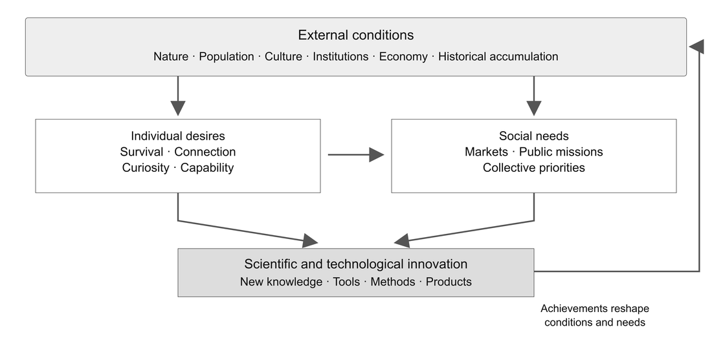

Why do humans innovate? How do desires, social needs, and external conditions drive creation together?
Human ingenuity continually expands the possibilities of life. Tools, technologies, and scientific knowledge accumulate across generations, giving later creators a foundation on which to build. The wheel, invented more than five thousand years ago, still turns in countless products today. Ancient observations and practical experience also find new uses as knowledge and technology change. Innovation creates new things while continually transforming what earlier generations have left behind.
Why do humans innovate, and how? Geography, culture, institutions, population, and economics all offer important clues.
Guns, Germs, and Steel examines the relationship between geography, agriculture, and the spread of technology. The Protestant Ethic and the Spirit of Capitalism explores economic activity through culture and values, while works such as Why Nations Fail emphasize how institutions shape incentives and the allocation of resources. Commercial competition links technical improvement to profit, providing a reason to keep investing.
Historical accumulation matters as well. Each scientific or technological achievement added to a local “pool of knowledge” supplies components that later creators can recombine. The Nature of Technology explores this process of combination. Existing equipment, skills, and forms of organization also shape the choices that follow, creating path dependence.
Each perspective reveals something. This book begins with people: What problems do they want to solve, and how do they use knowledge and tools to change their lives?
“Necessity is the mother of invention.” Desires and needs connect human action with the natural environment, markets, culture, and institutions. Some people improve farm tools to feed themselves; others invent machines in pursuit of wealth or recognition; still others explore the unknown out of curiosity. Innovation, in turn, changes life and awakens new desires. Following these connections allows us to bring creators, users, and social change into the same history of science and technology.
To understand scientific and technological creativity, we need to connect inner motives with external incentives. Curiosity, survival, wealth, recognition, and a sense of accomplishment draw people into exploration. Market demand, public missions, cultural values, and institutional incentives shape how these aspirations are expressed and whether they receive support. An inventor may begin out of personal interest, to solve someone else’s problem, or to respond to social expectations. Nature, culture, and institutions enter the innovation process through their influence on particular people and their choices. Individual desires and social needs thus form an important link between external conditions and scientific and technological achievements.
Among theories of human motivation, Maslow’s offers a useful starting point for this book. In 1943, he identified physiological needs, safety, belonging and affection, esteem, and self-actualization; his later thinking extended to self-transcendence. This book draws on that work to adopt a framework of six categories, including self-transcendence. It places staying alive, connecting with others, developing one’s abilities, and seeking meaning beyond oneself within a common field of inquiry. We can then ask: When people create a tool or investigate a problem, what aspect of life do they hope to change?
Maslow emphasized the relative priority of needs. When food, shelter, or safety is threatened, these concerns generally command more attention. Once basic living conditions are secure, people often have greater scope to pursue relationships, recognition, personal development, and spiritual or intellectual exploration. This offers a way to understand changes in the focus of innovation. A society devoting much of its effort to securing food faces different priorities and possibilities from one investing more heavily in understanding disease, improving transport, or exploring the universe.
Several aspirations can coexist within this relationship. People who are cold and hungry still seek dignity; affluent societies continue to face disease and threats to safety. A single invention may bring income, prestige, and the satisfaction of discovery. Later research on motivation has further emphasized the coexistence of needs and differences across cultures. The value of the hierarchy here lies in identifying different human concerns and considering how their relative priority changes with circumstances.
Culture also shapes the meaning of a need. Some people understand self-actualization as developing individual talents or an independent career; others place greater weight on family responsibilities, collective achievement, or public service. In his 1983 study of management in China, Nevis emphasized belonging and group relationships and reordered the hierarchy accordingly. Such work suggests that comparisons across regions and long periods should consider both common needs—such as survival, safety, and social connection—and the particular meanings that different societies give them.
This book adopts Maslow’s model because it brings these concerns into a connected discussion, from sustaining life to developing capabilities and pursuing inquiry beyond immediate practical benefit. Basic needs provide a shared language for comparing societies past and present. Changes in their priority and expression leave room to explain differences across places and periods. Used as an analytical scaffold, the model connects human motivation with the history of science and technology through three questions: What do people hope to obtain? What does society support? What does science and technology make possible?
Social needs arise from relationships among people and take shape through organizations, markets, and power. Individuals need food; cities need reliable food supplies and transport. Individuals seek protection from harm; states organize defense, public health, and disaster response. Groups differ in their interests, capabilities, and influence. Prices, policy, public investment, and cultural judgments help determine which problems receive priority. Personal aspirations can become collective tasks, while some groups’ demands attract more resources than others.
Creators working within a particular society choose projects in light of their interests, talents, and existing knowledge, while also confronting constraints of funding, materials, institutions, and users. Social needs can become motives for wealth and entrepreneurship through market rewards, a sense of responsibility through public missions, or a desire for recognition through prestige and cultural values. A person may pursue research to learn, earn a living, and serve society at the same time. Personal aspirations and social incentives interact within scientific and technological activity; social needs exert their influence through people’s choices and organized action.
On this basis, the book proposes a conceptual model of “the dynamics of needs and scientific and technological innovation” (Figure I-1), linking external conditions, individual desires and social needs, and scientific and technological activity. The desire to survive, connect, understand, and develop one’s abilities supplies continuing motivation. Natural conditions, population, culture, institutions, the economy, and accumulated knowledge shape the priority of needs and the means of meeting them. Creators combine those needs with available knowledge to undertake particular investigations and inventions. Different places and periods may consequently display different directions and rhythms of innovation.
Achievements feed back into these relationships. Agriculture increases food supplies, supporting settlement, population growth, and specialization while creating new problems of storage, transport, and governance. Information technology widens communication, changes work and consumption, and creates new markets and public tasks. As populations concentrate and social networks expand, more innovations require collaboration and organizational support. People, society, and technology continually reshape one another. This feedback provides a central thread for the book’s account of technological history.
Figure I-1. A schematic of the relationships among individual desires, social needs, external conditions, and scientific and technological innovation.

This article is from Part I, Desire and Innovation, of The Power of Desire: A Brief History of Scientific & Technological Innovation (second edition) — Maslow Hierarchy of Needs Innovation. Next: Six Categories of Technological Value. See the full serialization index.
More from Part I: Six Categories of Technological Value · Ten Thousand Years of Innovation · Three Great Technological Revolutions · Population Size and Technological Innovation